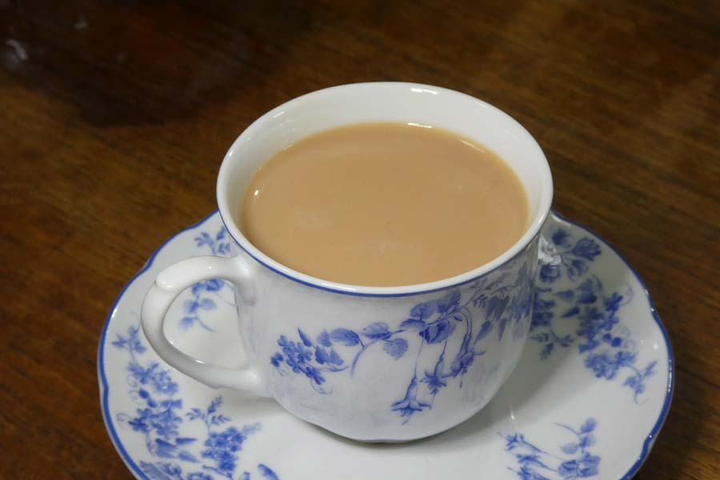

After picking, the leaves of C. sinensis soon begin to wilt and oxidize unless immediately dried. An enzymatic oxidation process triggered by the plant's intracellular enzymes causes the leaves to turn progressively darker as their chlorophyll breaks down and tannins are released. This darkening is stopped at a predetermined stage by heating, which deactivates the enzymes responsible. Without careful moisture and temperature control during manufacture and packaging, growth of undesired molds and bacteria may make tea unfit for consumption.
Tea is generally divided into categories based on how it is processed. At least six different types are produced:
- White: wilted and unoxidized
- Yellow: unwilted and unoxidized but allowed to yellow
- Green: unwilted and unoxidized
- Oolong: wilted, bruised, and partially oxidized
- Black: wilted, sometimes crushed, and fully oxidized (called 紅茶 [hóngchá], "red tea" in Chinese and other East Asian tea culture)
- Post-fermented (Dark): green tea that has been allowed to ferment/compost (called 黑茶 [hēichá] "black tea" in Chinese tea culture)
Additional processing and additives
After basic processing, teas may be altered through additional processing steps before being sold,and is often consumed with additions to the basic tea leaf and water added during preparation or drinking. Examples of additional processing steps that occur before tea is sold are blending, flavouring, scenting, and decaffeination of teas. Examples of additions added at the point of consumption include milk, sugar and lemon.
Tea blending is the combination of different teas together to achieve the final product. Almost all tea in bags and most loose tea sold in the West is blended. Such teas may combine others from the same cultivation area or several different ones. The aim is to obtain consistency, better taste, higher price, or some combination of the three.
Flavoured and scented teas add new aromas and flavours to the base tea. This can be accomplished through directly adding flavouring agents, such as ginger or dried ginger, cloves, mint leaves, cardamom, bergamot (found in Earl Grey), vanilla, and spearmint. Alternatively, because tea easily retains odours, it can be placed in proximity to an aromatic ingredient to absorb its aroma, as in traditional jasmine tea.
Black tea is often taken with milk. The addition of milk to tea in Europe was first mentioned in 1680 by the epistolist Madame de Sévigné.[86] Many teas are traditionally drunk with milk in cultures where dairy products are consumed. These include Indian masala chai and British tea blends. These teas tend to be very hearty varieties of black tea which can be tasted through the milk, such as Assams, or the East Friesian blend. Milk is thought to neutralise remaining tannins and reduce acidity. The Han Chinese do not usually drink milk with tea but the Manchus do, and the elite of the Qing Dynasty of the Chinese Empire continued to do so. Hong Kong-style milk tea is based on British colonial habits. Tibetans and other Himalayan peoples traditionally drink tea with milk or yak butter and salt. In Eastern European countries, Russia and Italy, tea is commonly served with lemon juice. In Poland, tea is traditionally served with a slice of lemon and is sweetened with either sugar or honey; tea with milk is called a bawarka ("Bavarian style") in Polish and is also widely popular. In Australia, tea with milk is known as white tea.